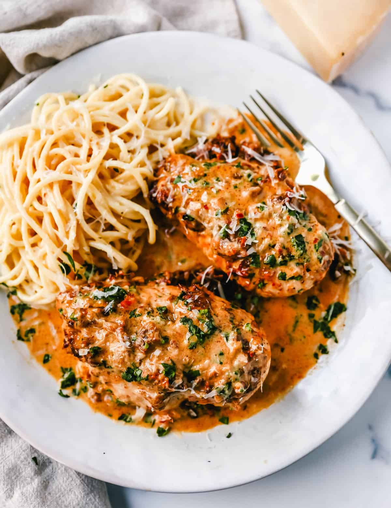
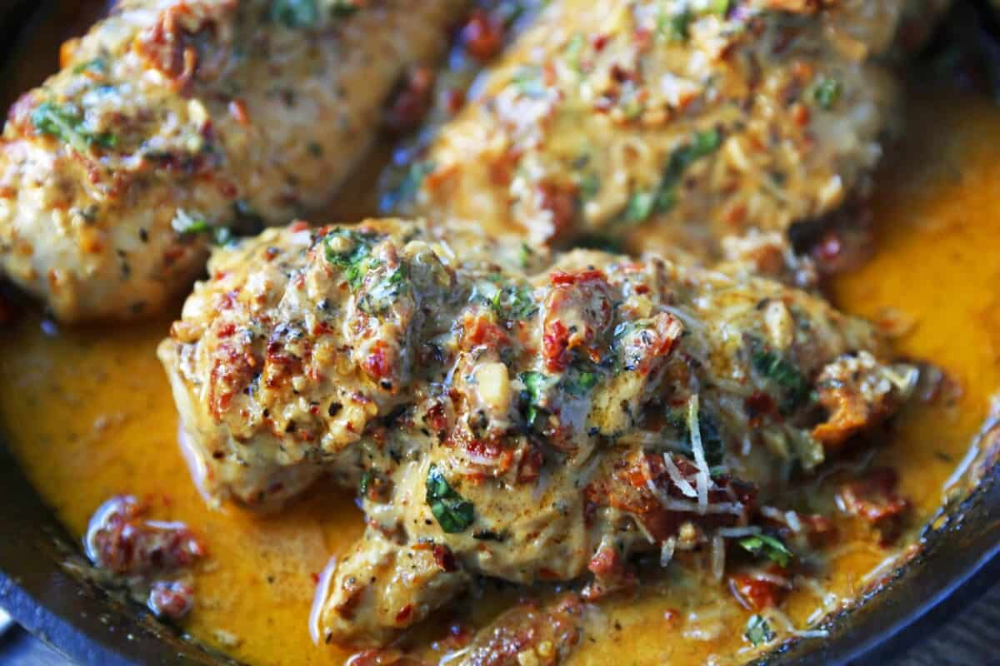

Marry Me Chicken
Famous skillet chicken in a sundried tomato parmesan cream sauce with fresh basil. This quick and easy dinner recipe is rated 5 stars for good reason. It will definitely inspire marriage proposals!

What is Marry Me Chicken?
It is chicken breasts sauteed in olive oil and seasoned with salt and pepper. A sundried tomato cream sauce is made with fresh garlic, thyme, red pepper flakes, heavy cream, parmesan cheese, sundried tomatoes, and fresh basil. It is an easy, crowd-pleasing, popular 30-minute dinner.
INGREDIENTS:
- Extra-Virgin Olive Oil
- Chicken Breasts
- Salt and Pepper
- Garlic
- Thyme
- Red Pepper Flakes
- Chicken Broth
- Heavy Cream
- Sundried Tomatoes
- Parmesan Cheese
- Fresh Basil
*If you want to make it even quicker, I suggest using thin-sliced boneless, skinless chicken breasts.

Ingredients
- 1 Tablespoon Olive Oil
- 3-4 Large Chicken Breasts
- Salt
- Pepper
- 2 cloves Garlic (minced)
- 1 teaspoon Thyme
- 1 teaspoon Red Pepper Flakes (may add only 1/2 teaspoon for less spice)
- 3/4 cup Chicken Broth
- 1/2 cup Heavy Cream
- 1/2 cup Sundried Tomatoes (chopped)
- 1/4 - 1/2 cup Freshly Grated Parmesan Cheese
- Fresh Basil
- Preheat oven to 375 degrees. In a large oven-safe skillet heat oil over medium-high heat. Season chicken generously with salt and pepper and sear until golden, about 4-5 minutes per side. Transfer chicken to a plate.
- Return skillet to medium heat. Add garlic and cook for 1 minute. Stir in thyme, red pepper flakes, chicken broth, and heavy cream. Cook for 5 minutes, stirring often. Stir in sundried tomatoes and parmesan cheese.
- Return chicken to skillet and spoon sauce all over the chicken breasts. Bake until chicken is cooked through -- about 15-18 minutes. Garnish with basil and grated parmesan cheese, if so desired.